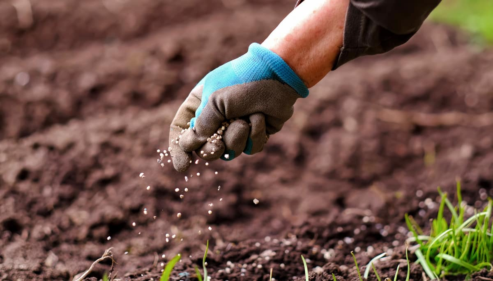
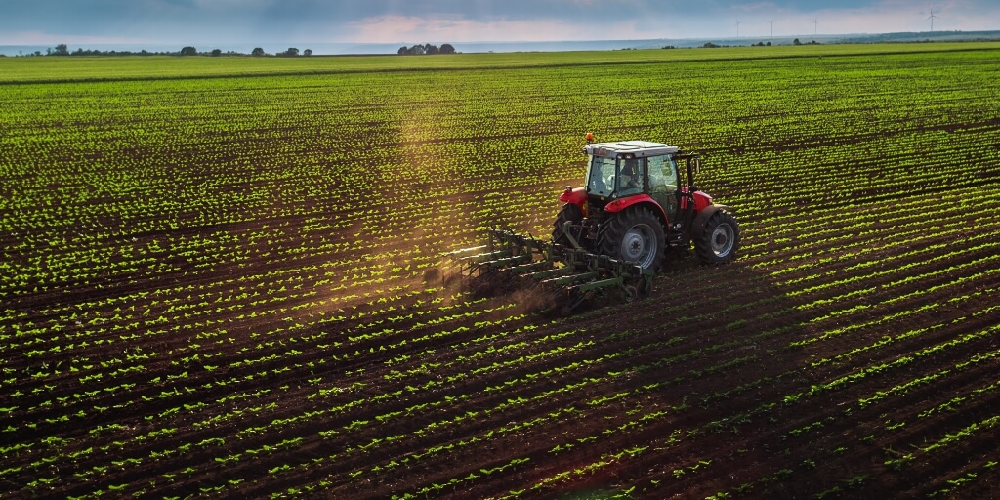
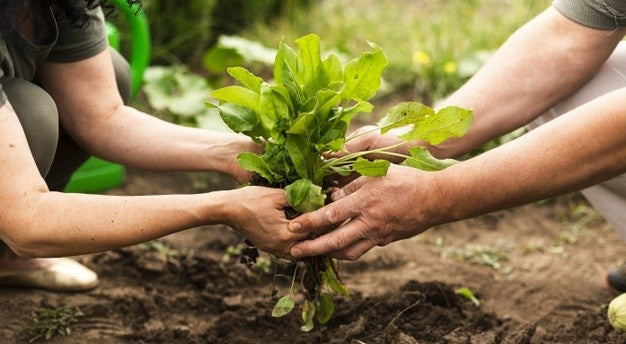

Agricultura Sustentável
A agricultura sustentável é uma abordagem que busca equilibrar a produção de alimentos com a conservação dos recursos naturais e a proteção do meio ambiente. Ela reconhece a importância de práticas agrícolas que sejam socialmente justas, economicamente viáveis e ecologicamente responsáveis. Por meio de técnicas inovadoras e conscientes, a agricultura sustentável busca garantir a segurança alimentar atual e futura, ao mesmo tempo em que preserva os ecossistemas para as próximas gerações.ma das principais características da agricultura sustentável é a minimização do uso de produtos químicos, como pesticidas e fertilizantes sintéticos, que podem causar danos ao solo, água e organismos não alvo. Em vez disso, são utilizadas práticas de manejo integrado de pragas, como rotação de culturas, plantio consorciado e uso de insetos benéficos, que ajudam a controlar naturalmente as pragas.
Além disso, a agricultura sustentável incentiva a conservação e melhoria do solo. A adoção de técnicas como a agricultura de conservação, que inclui o plantio direto, o cultivo mínimo e a cobertura do solo com plantas de cobertura, ajuda a reduzir a erosão e a melhorar a qualidade do solo. Essas práticas também aumentam a capacidade de retenção de água do solo, reduzindo a necessidade de irrigação e tornando os sistemas agrícolas mais resilientes às mudanças climáticas. Outro aspecto importante da agricultura sustentável é a gestão eficiente dos recursos hídricos. A adoção de sistemas de irrigação de baixo consumo, como a irrigação por gotejamento ou a irrigação de precisão, ajuda a minimizar o desperdício de água. Além disso, a recuperação e reutilização da água da chuva e a implementação de técnicas de drenagem sustentável, como lagoas de retenção e biovaletas, ajudam a reduzir o escoamento superficial e a poluição dos recursos hídricos.
A diversificação de culturas também é um princípio-chave da agricultura sustentável. Ao cultivar uma variedade de culturas em um mesmo espaço, é possível melhorar a fertilidade do solo, reduzir a incidência de doenças e pragas e promover a biodiversidade. A integração de culturas agrícolas e pastagens, por exemplo, permite a rotação entre áreas de plantio e áreas de pastoreio, proporcionando um uso mais eficiente dos recursos disponíveis. A agricultura sustentável também promove a utilização de energias renováveis e a redução das emissões de gases de efeito estufa. A adoção de sistemas de energia solar ou eólica nas propriedades rurais, a implementação de práticas de manejo do esterco animal para evitar a liberação de metano e a otimização do uso de maquinário agrícola são algumas das medidas que contribuem para uma agricultura mais sustentável e de baixo carbono.
Em resumo, a agricultura sustentável é uma abordagem holística que busca integrar práticas agrícolas ambientalmente amigáveis, socialmente justas e economicamente viáveis. Por meio da adoção de técnicas inovadoras, a conservação dos recursos naturais e a proteção do meio ambiente podem ser alcançadas, enquanto suprimos as necessidades alimentares da população global de maneira mais eficiente e menos prejudicial ao ecossistema. Ao investirmos em uma agricultura sustentável, cultivamos não apenas alimentos, mas também um futuro equilibrado para as gerações presentes e futuras.